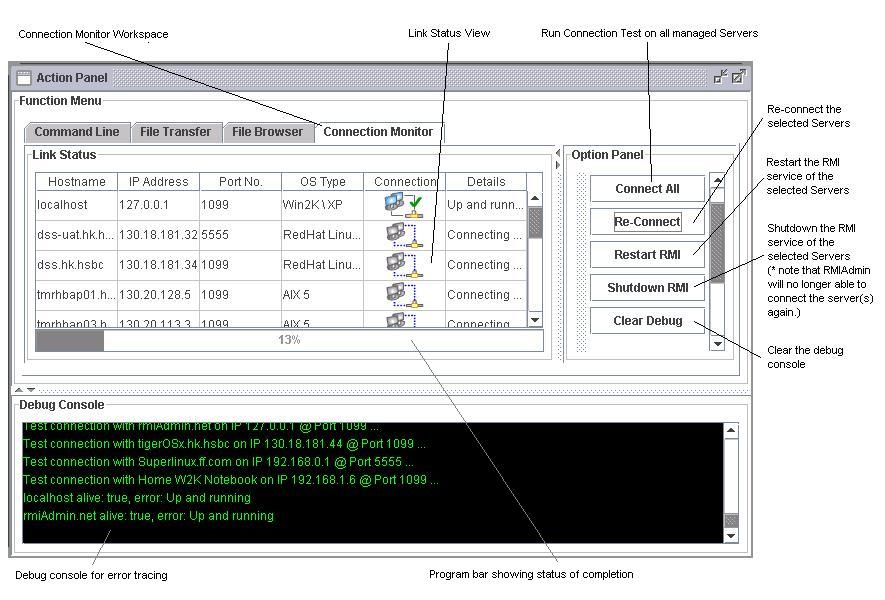
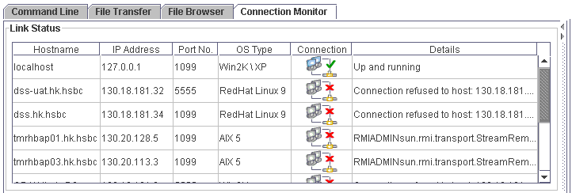
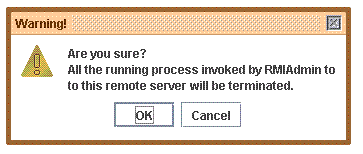
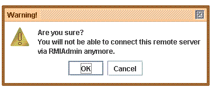

For example, when you can't connect to a remote server for unknown cause, you may use the Connection Monitor to diagnose the problem, which could assist you to identify the possible cause.
Occasionally, the failure of communication may be due to:
- Network linkage physically down
- Remote server is physically shutdown
- Remote server's hardware device failure
- Remote server's application error
The usage of RMIAdmin Connection Monitor is designed to be as simple as possible such that you could easily perform diagnostic procedure in critical moment.

Rehresh all the connection status
- Click the "Connect All" button.
- A progress monitor will be displayed, wait until the connection test completed.
-
RMIAdmin will then attempt to connect all the managed server, and return the
connection status to you shortly.

Rehresh connection status of any selected server
- Select the target server(s) from the Link Status view, then press the "Re-Connect" button.
- A progress monitor will be displayed, wait until the connection test completed.
- RMIAdmin will then attempt to connect all the managed server, and return the connection status to you shortly.
Restart the RMI Service of remote server
This feature is provided for the sake of restarting RMI service at remote server, especially when the remote RMI service appears to be hang up or being unstable.
- Select the target server(s) from the Link Status view, then press the "Restart RMI" button.
-
A warning message will then be prompted, asking your confirmation to proceed restarting
the RMI service at remote server.
 - Once you clicked "OK", the remote RMI service will be restarted immediately.
Shutdown the RMI Service of remote server
This feature allows you to terminate the RMI service at remote server. Once invoked, the client will not be able to connect back to the remote server again via RMI, unless the RMI service is started again locally or by other remoting tools (e.g telnet).
- Select the target server(s) from the Link Status view, then press the "Shutdown RMI" button.
-
A warning message will then be prompted, asking your confirmation to proceed restarting
the RMI service at remote server.
 - Once you clicked "OK", the remote RMI service will be terminated immediately.
Related Topics:
|
|
Copyright 2005 © RMIAdmin. All rights reserved. |